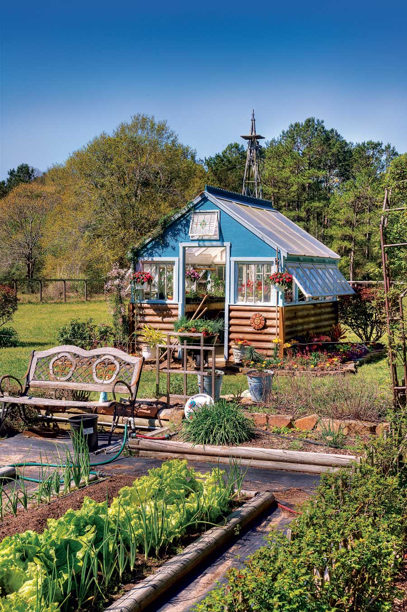
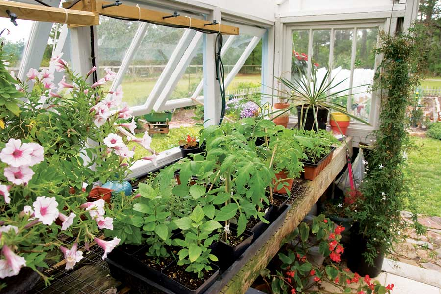
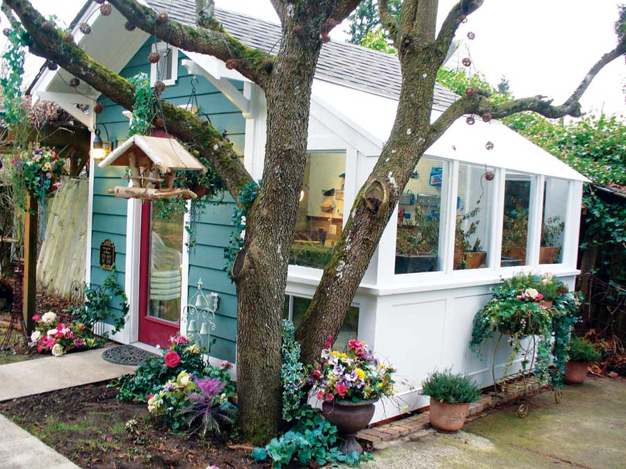
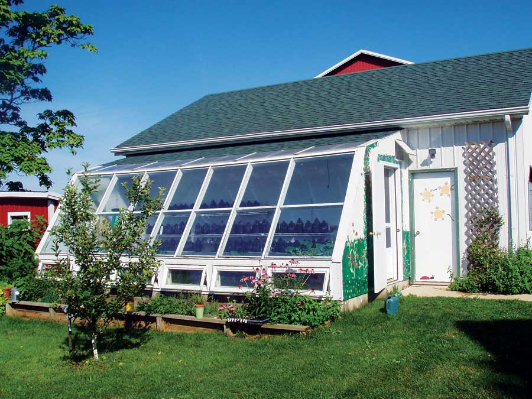

Diy, Low-Cost And Multipurpose Greenhouses
Use recycled materials to create an affordable garden greenhouse so you can enjoy fresh food all year long!
By Troy Griepentrog
October/November 2009
On a blustery winter day, what could be better than spending time picking fresh greens in a warm greenhouse?
Greenhouses can be used for more than starting seedlings. With the right design and proper management, your greenhouse can easily produce food year-round. (See Expert Advice for Greenhouse Growing.)
And a “greenhouse” can easily serve multiple purposes. If you want your greenhouse to double as a workshop or studio, include large roof overhangs on the south side to shade the windows in summer (or cover glass areas with heavy shade cloth).
Need a guesthouse from time to time? Make your building taller and install a sleeping loft. (See Build a Greenhouse: The Amazing, Low-cost, Multipurpose, Solar-heated Greenhouse/Guesthouse.)
The key to making a DIY greenhouse affordable is working with recycled windows and/or glass doors. Thousands of these items are thrown away each year as homeowners remodel. Locate your glass first, then design your greenhouse frame around it. Most communities have a few salvage yards that handle windows, or you can call companies that install new windows. They’re likely to have a supply of cheap - or even free - windows.
To find salvaged materials in your area, check auctions, garage sales, freecycle.org, craigslist.com or a Habitat ReStore.
Be sure to look through all the photos in the Image Gallery.
We hope this collection of greenhouse ideas will inspire you to design and build your own greenhouse. Tell us about your DIY greenhouse that you’ve made from recycled materials! Just send an e-mail to letters@MotherEarthNews.com.
A Classy Greenhouse from Recycled Windows
I start almost all my vegetables from seeds and propagate roses and other ornamentals from cuttings. My yard is full of plants that came from other plants. I am a Texas Master Gardener, as is my wife, Loraine. I’m also certified as a plant propagation specialist by Texas A&M University, and I teach propagation at the extension office in Houston.
I built this greenhouse myself, from recycled windows and doors. It took me four months to construct it.
Most of the windows were recycled from the Peach Tree Bed and Breakfast in Fredericksburg, Texas. The other windows came from a friend who remodeled his home. I decided to wait to design the greenhouse until after I had purchased all the windows and doors so that I could design around the dimensions of the materials.
The foundation slab allows water to drain through the center and into the flower beds that surround the greenhouse. The plants are watered by misters or drip irrigators controlled by a timer. I heat the greenhouse if the temperature gets below 45 degrees Fahrenheit. During the summer, I open the windows for ventilation.
- Brian Koehl
A Gift Greenhouse
It all started with an ugly aluminum shed with broken doors - an antique eyesore from our friend Ed Hannity’s childhood days. Now that Ed is 58 years old, it was time for a new, improved structure - a greenhouse for gardening and a workshop to call his own.
Ed’s time is consumed by his job and doing things for other people. My husband, Bob, and I are home designers, so we decided to build a greenhouse for Ed - hoping to surprise him. We built the structure at our house, disassembled it and delivered it on a car trailer to Ed’s house. We used recycled materials as much as possible, and found many materials online at low cost or for free. After friends and relatives learned what we were planning, it seemed everyone had some sort of building material they were thrilled to get rid of.
The workbench counter is made from a solid-core door. Driving home one night, we spotted a stack of short 2-by-4s. We beveled the edges for the potting bench and lower shelf. Bob even had various nails and screws left over from past projects.
The toolshed area keeps everything in order and within reach. The greenhouse portion and potting bench create a great space to nurture new plants and to overwinter hanging baskets. It’s convenient, and a pleasant place to spend time. We also saved many materials from ending up in the landfill.
You can purchase a detailed plan of this greenhouse.
- Robin Anderson
An Efficient Lean-to Greenhouse
We wanted a greenhouse to extend our growing season, but never felt we could justify the use of electricity for winter growing. Now that we have constructed a lean-to greenhouse, we feel we have the best of both worlds.
Lean-to greenhouses make use of the insulated wall of an existing building. Because we’re at 40 degrees latitude in Ohio, the 60-degree slant of the south-facing wall allows the low winter sun to pass directly through the tempered, insulated glass and bounce off the white interior walls. This results in maximum light and warmth for the plants. Allowing sunlight to reach the back wall is an important consideration in lean-to greenhouse design.
December and January are the cloudiest months in Ohio, and it’s important to store any heat the sun provides during this time. Water-filled plastic jugs, painted black, are lined up along the back wall to absorb heat during the day and release it at night. Two 50-gallon water-filled barrels, also painted black, absorb and release heat over a longer period of time.
Air movement is essential in any greenhouse. We rely mainly on air currents provided by screened windows with automatic openers.
A sunny, winter day in the teens will heat the greenhouse into the 80s by mid-morning. The heat-retaining containers cushion the cold night temperatures. If nights dip below freezing, cold-tolerant plants still thrive. We can start seedlings in February, protect melons and zucchini from vine-borers in the summer, and continue growing tomatoes into late autumn. We enjoy being able to extend our growing season without increasing our energy use.
- Mary Lou Shaw
For more creative ideas for building your own greenhouse from recycled materials, check out these articles:
How to Build a Greenhouse from Used Windows or Storm Doors
A Small Greenhouse from a Bus Stop Shelter
Build a Greenhouse: The Amazing, Low-cost, Multipurpose, Solar-heated Greenhouse/Guesthouse
|
 WILLIAM D. ADAMS Brian Koehl built this greenhouse using recycled windows. |
 WILLIAM D. ADAMS Greenhouses can be used year-round for food production, and you can start ornamental plants in them. |
 WILLIAM D. ADAMS Texas Master Gardeners Brian and Loraine Koehl. |
|
 ROBIN ANDERSON This greenhouse serves as a workshop, too. It was built off-site and moved using a trailer. |
 MARY LOU SHAW Plastic jugs that have been painted black absorb heat during the day and release it at night. |
|